Pera Joe and I — 43 years of acoustic blues.
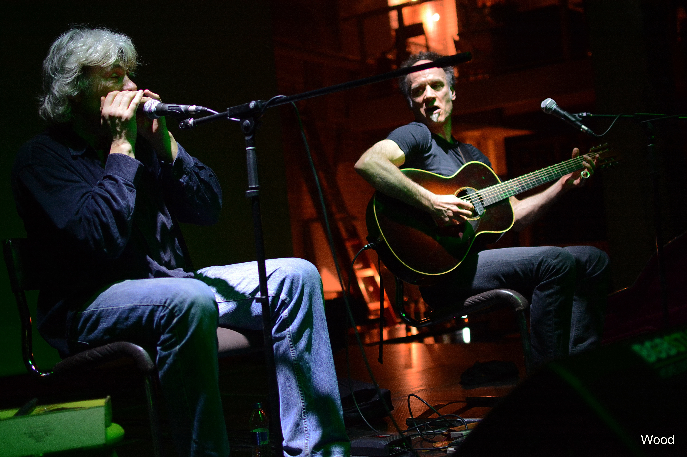
I first met Pera Joe — Petar Miladinovic — in our home country of former Yugoslavia in 1981. Two years later, in 1983, we established the Blues Trio together with Zoran Katrinka-Kuki. What followed was more than four decades of playing acoustic blues across Europe, recording, helping out building a blues scene from scratch, and proving that the music we loved could fill rooms and move people.
Many claim we were the first professional acoustic blues act in Eastern Europe. Whether or not the title can be confirmed, the story is real: we were two musicians who believed in the music long before anyone else in the region was paying attention, and kept at it through everything. We cannot praise our audience enough for all the support and love they gave us over many years. It's one of the things that keeps us going — meeting old fans that now bring their children and grandchildren to our shows.
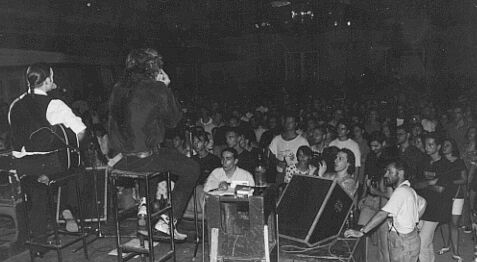
Blues Trio at KST, Belgrade, 1994 — playing for a packed house.
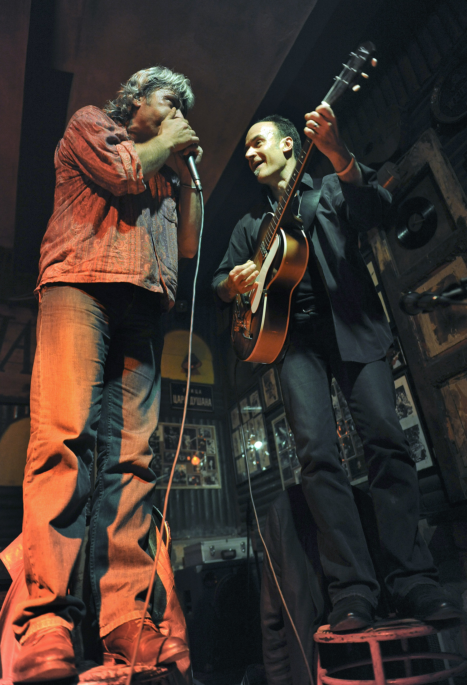
The finale. Every Blues Trio show ends the same way — standing on the chairs, cables and all.
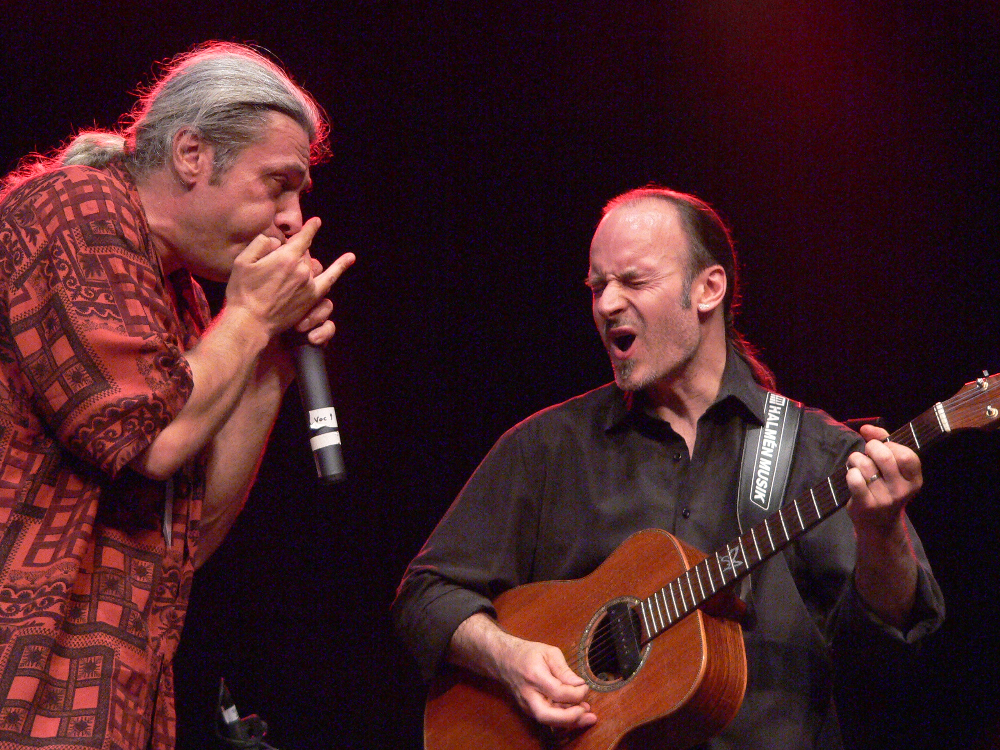
43 years of pure joy playing together.
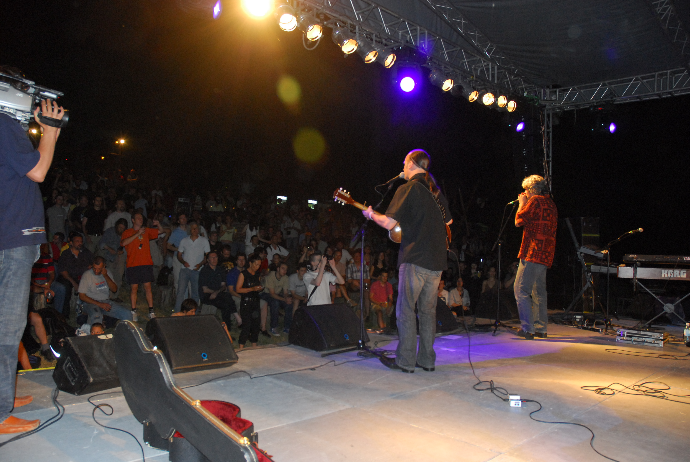
Voxtock Blues Festival, Belgrade 2007.
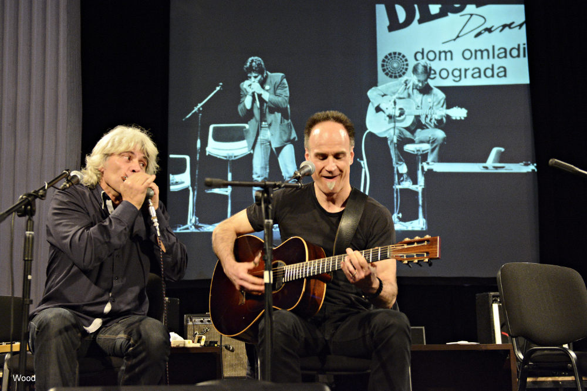
Celebrating 35 years of Blues Trio — the photo in the back is from 1988 when we were already playing for 5 years. Darn we old!
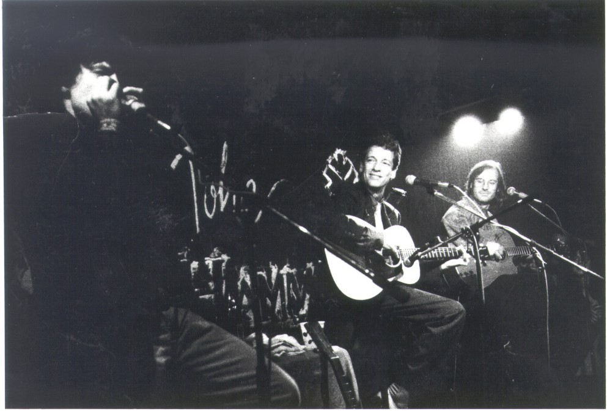
Highlight of our first period — jamming with John Hammond Jr. in 1990.
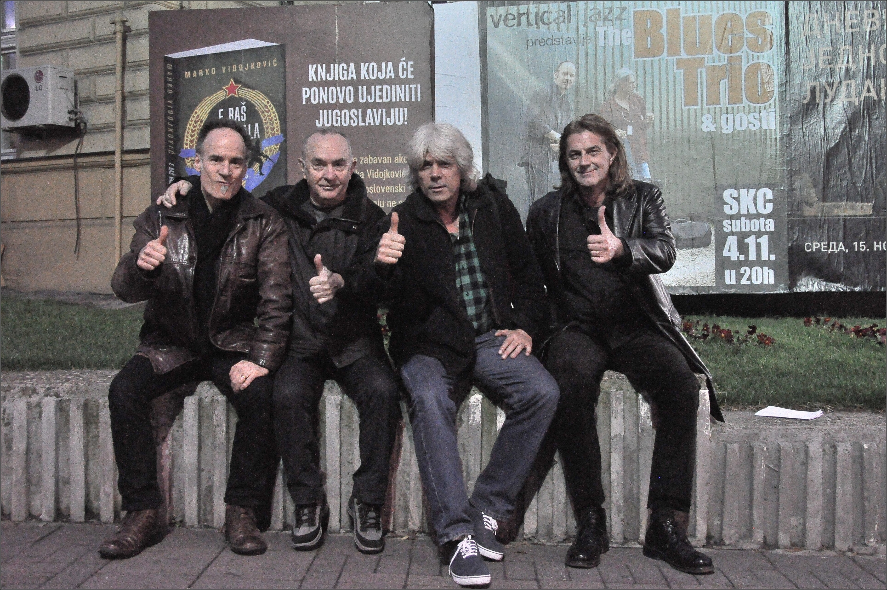
Celebrating 35 years — the original lineup with Zoran Katrinka-Kuki (far right) and promoter and owner of Vertical Jazz record label Dragoljub Stojaković-Dača (second from left).
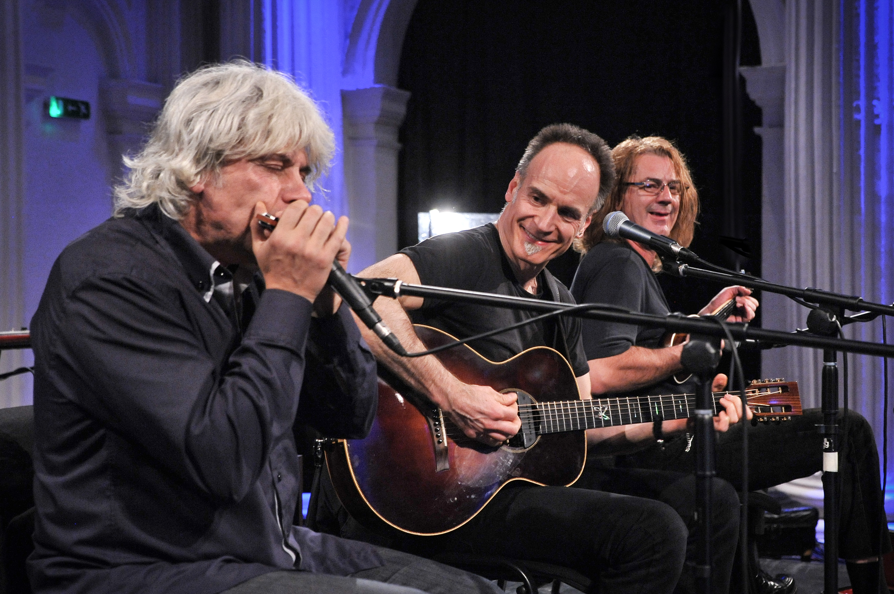
The real Blues Trio! Joining us for the celebration of 35 years — our founding member Zoran Katrinka-Kuki.
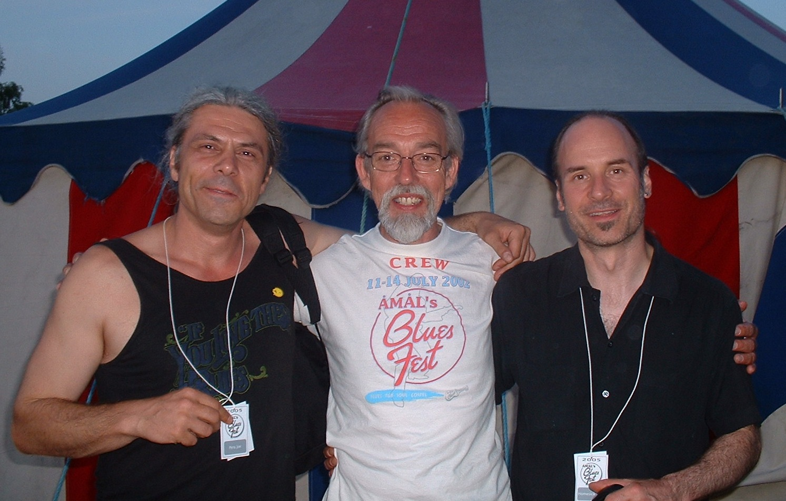
With a gentleman who booked Mac solo or Blues Trio 13 times since 1997 — Nils Lönnsjö, founder of the Åmål Blues Festival in Sweden.
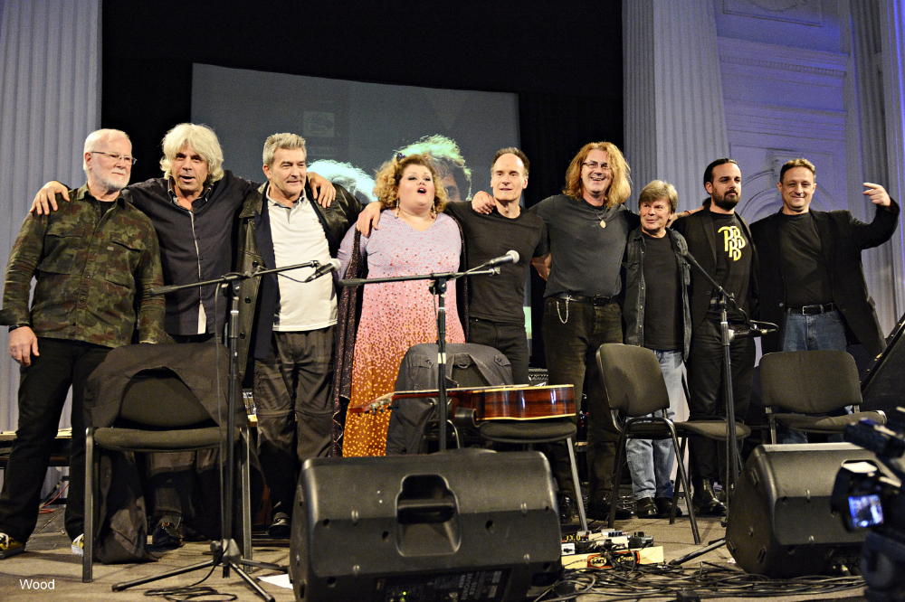
After the big concert celebrating 35 years of Blues Trio — group photo with guests. L-R: Zika Jelić, Pera Joe, Jovan Ilić, Bojana Stamenov, Homesick Mac, Zoran Katrinka-Kuki, Duda Bezuha, Milovan Djudjić-Jimi, Vlada Maričić.
In the early 80s, Pera Joe and I played during the establishing of the first blues club in Belgrade. We played every opportunity we could — promoting the blues, ourselves, and the other bands finding their way into the style. We grew together with our audience.
Do we have stories to share? You bet — like the one about how we arranged to play as opening act before John Mayall in Belgrade in 1987. This wasn't booked at all the usual way…